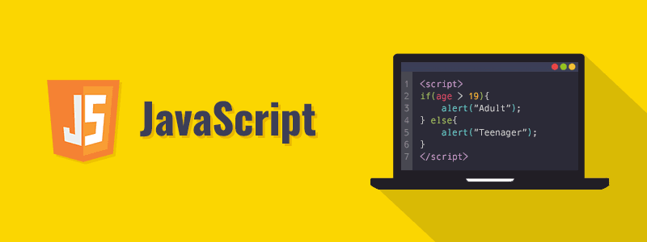

JavaScript Giriş
JavaScript, kesinlikle Java değildir!
JavaScript HTML içine gömülebilen, tarayıcılar tarafından yorumlanabilen, web sayfalarına etkileşim kazandırmak için kullanılan bir betik dilidir. Java programlama diliyle isim benzerliği dışında bir ilgisi yoktur. JavaScript bir ECMAScript implementasyonudur. JavaScript bir betik dilidir, dolayısıyla JavaScript ile yazılan programlar da betik (script) olarak adlandırılır.
JavaScript her ne kadar web sitelerini (web tarayıcıların JavaScript betiklerini çalıştırma yeteneğini kullanarak) daha işlevsel hale getirmek için geliştirilmiş ve yıllarca yalnızca bu amaçla kullanılmış olsa da günümüzde sunucu (server) tarafında da yoğun olarak kullanılmaktadır. Aslında JavaScript betikleri, bir JavaScript motorunun (engine) bulunduğu her cihazda çalıştırılabilir. Şirketler ve topluluklar tarafından geliştirilen farklı JavaScript motorları vardır:
Google Chrome ve Opera tarafından kullanılan V8
Mozilla Firefox tarafından kullanılan SpiderMonkey
Microsoft Edge tarafından kullanılan ChakraCore

JavaScript betikleri öncelikle JavaScript motoru tarafından okunur. Okunan betik, derlenerek makine diline dönüştürülür ve son olarak bu makine kodu işleme konur.
Web tarayıcı üzerinde çalışan bir JavaScript betiği; web sayfasını değişikliğe uğratmak, kullanıcıyla etkileşimde bulunmak ve sunucu ile iletişim kurmak gibi işleri başarıyla gerçekleştirir. Ancak kullanıcının dosya sisteminden dosya okuma - yazma gibi işlemleri yapamaz. Çünkü web tarayıcılar, kullanıcının güvenliğini gözeterek birtakım işlemleri ya doğrudan engeller ya da kullanıcının onayına sunar. Fakat örneğin sunucu taraflı JavaScript kullanımını mümkün kılan (çünkü bünyesinde bir JavaScript motoru barındırır) Node.js isimli çalışma ortamı, geliştiricilere daha özgür bir ortam sunar.